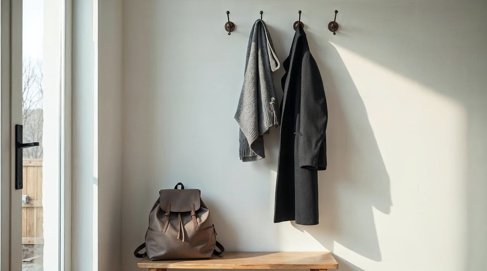
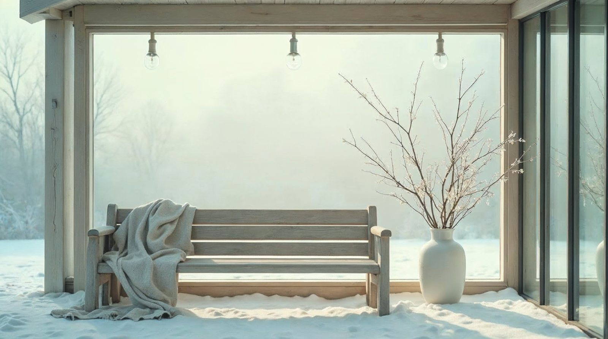
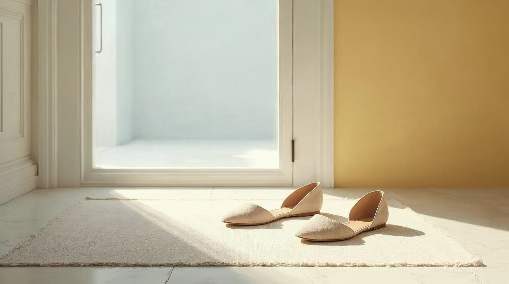
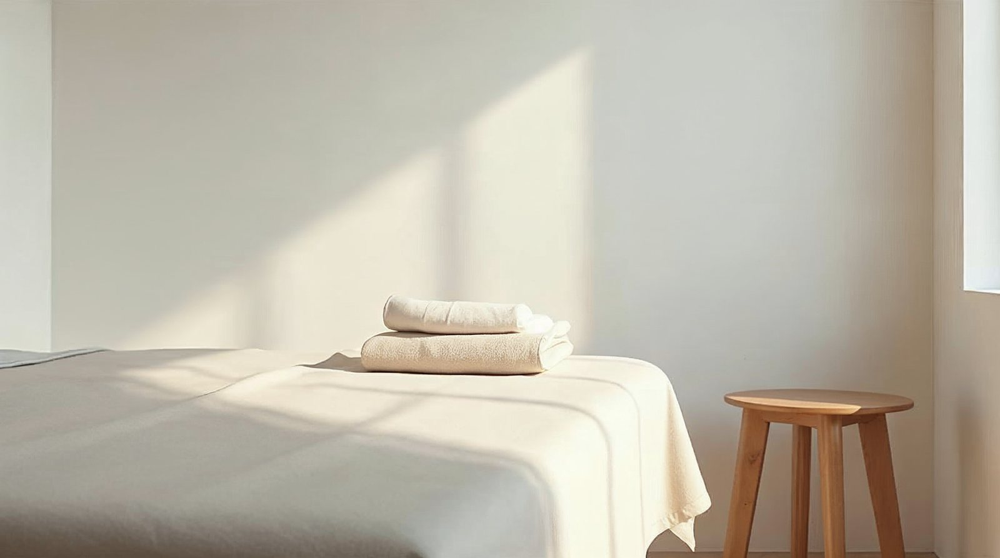
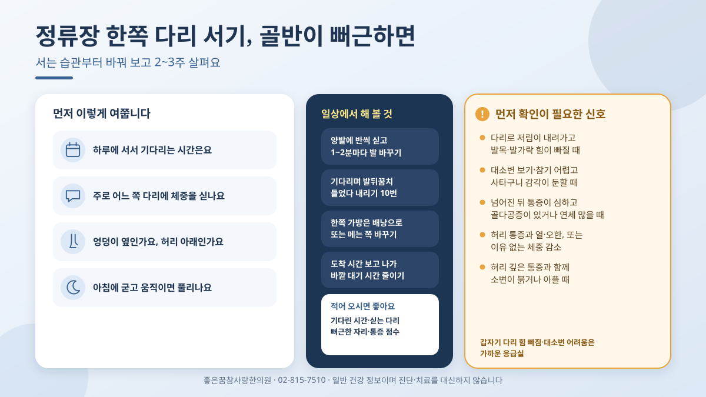

이종호 한의사 감수좋은꿈참사랑한의원 대표원장 (한의사 면허번호 19769)발행 2026-11-27 · 수정 2026-11-27
이 글의 차례
겨울 아침 상도동 언덕 위 정류장에서 마을버스를 기다리거나 노량진역 앞에서 환승 버스를 기다릴 때, 추워서 주머니에 손을 넣고 한쪽 다리에 체중을 실은 채 엉덩이를 옆으로 빼고 서 있는 분이 많습니다.
이런 자세가 하루 몇 번, 몇 주씩 늘 같은 쪽으로 반복되면 체중을 실은 쪽 엉덩이 옆과 허리 아래, 골반 뒤쪽 꼬리뼈 옆 한 점이 뻐근하고, 오래 서 있거나 앉았다 일어설 때 그쪽이 걸리는 듯 불편해지기 쉽습니다.
한쪽으로 기대어 서는 것 자체가 몸을 상하게 하는 자세는 아니지만, 추위로 근육이 굳은 상태에서 늘 같은 쪽으로만 기대면 그쪽 근육과 관절이 쉴 틈 없이 버티게 됩니다. 먼저 양발에 체중을 반씩 나누고 1~2분마다 발을 바꾸는 습관, 버스 도착 시간을 확인하고 나가 바깥에서 기다리는 시간을 줄이는 습관부터 바꿔 보세요.
2~3주가 지나도 한쪽이 계속 뻐근하거나 아침마다 같은 자리가 굳는다면 골반과 허리의 움직임을 살펴 추나 상담을 받아 볼 수 있습니다. 다만 다리가 저리거나 힘이 빠지고, 대소변 보기가 달라졌다면 추나보다 진료가 먼저입니다.
왜 한쪽 다리로 서서 기다리면 골반과 허리 한쪽이 뻐근해질까요
- 한쪽 다리에 체중을 싣고 서면 반대쪽 골반이 아래로 처지고, 체중을 실은 쪽 엉덩이는 옆으로 빠집니다. 이때 몸은 근육으로 버티기보다 엉덩이 옆 힘줄과 인대, 관절에 기대어 서게 되어, 그쪽 엉덩이 옆과 허벅지 바깥에 당김이 쌓입니다.
- 골반이 기울면 허리는 그 반대쪽으로 살짝 휘어 균형을 잡습니다. 그래서 허리 아래 한쪽 근육은 늘 짧아진 채로, 반대쪽은 늘어난 채로 오래 머물게 됩니다.
- 골반 뒤쪽 엉치뼈와 엉덩뼈가 만나는 자리(천장관절)는 크게 움직이지 않는 관절이지만, 늘 한쪽으로 체중이 실리면 주변 인대와 근육이 예민해져 꼬리뼈 옆 한 점이 콕 집어 아픈 느낌으로 나타나기도 합니다.
- 추위에 몸이 움츠러들면 엉덩이와 허리 근육도 함께 긴장해, 같은 자세라도 따뜻한 날보다 쉽게 뻐근해집니다. 주머니에 손을 넣으면 팔로 균형을 잡지 못해 골반과 허리가 그 몫까지 떠안습니다.
- 경사진 언덕 정류장에서는 바닥이 기울어 있어 저절로 아래쪽 다리에 체중이 더 실립니다. 매일 같은 방향을 보고 서면 늘 같은 다리에 부담이 갑니다.
- 무거운 가방을 늘 같은 쪽 어깨에 메고, 같은 쪽 손으로 휴대폰을 들고 고개를 숙이는 습관이 겹치면 몸 한쪽에만 부담이 몰립니다.
- 예전에 한쪽 발목을 자주 삐었거나 한쪽 신발 바깥 뒤축만 유난히 닳는다면, 이미 몸이 한쪽으로 체중을 싣는 습관을 가지고 있을 수 있습니다.
- 한의학에서는 오래 서 있으면 뼈를 상한다는 구립상골(久立傷骨)이라는 말로 같은 자세가 오래 이어질 때의 부담을 설명하고, 찬 기운이 허리와 골반에 머물러 기혈이 막히면 뻐근하고 무거운 통증이 생긴다고 보기도 합니다.
먼저 이렇게 여쭙니다
- 하루에 바깥에서 서서 기다리는 시간이 대략 얼마나 되는지, 출근길과 퇴근길 어디에서 서 있는지 여쭙니다.
- 서 있을 때 주로 어느 쪽 다리에 체중을 싣는지, 스스로 알아차린 적이 있는지 여쭙니다.
- 뻐근한 자리가 엉덩이 옆인지, 허리 아래 한쪽인지, 꼬리뼈 옆 한 점인지, 허벅지 바깥으로 이어지는지 여쭙니다.
- 오래 서 있을 때, 앉았다 일어설 때, 계단을 오를 때, 돌아누울 때 가운데 언제 가장 불편한지 여쭙니다.
- 아침에 일어났을 때 굳는 느낌이 있는지, 움직이면 풀리는지, 얼마나 지나야 풀리는지 여쭙니다.
- 가방을 메는 쪽, 다리를 꼬는 쪽, 잠자는 자세, 신발 밑창이 닳는 모양을 여쭙니다.
- 예전에 허리나 골반, 발목을 다친 적이 있는지, 수술이나 골다공증 진단을 받은 적이 있는지 여쭙니다.
- 다리 저림이나 감각 변화, 대소변 변화, 열이 있는지도 함께 여쭙니다.

일상에서 먼저 해 볼 수 있는 것
정류장에서 서는 법 바꾸기
- 양발을 골반 너비로 벌리고 발바닥 전체에 체중을 반씩 나눠 섭니다. 무릎은 쭉 펴서 잠그지 말고 살짝 여유를 둡니다.
- 한쪽으로 기대고 싶다면 1~2분마다 발을 바꿉니다. 버스 도착 안내판의 숫자가 바뀔 때마다 다리를 바꾸는 식으로 신호를 정해 두면 잊지 않습니다.
- 기다리는 동안 발뒤꿈치를 천천히 들었다 내리기 10번, 엉덩이를 5초 조였다 풀기 5번을 합니다. 종아리와 엉덩이 근육이 움직이면 몸이 덜 굳고 발도 덜 시립니다.
- 주머니에 손을 넣기보다 장갑을 끼고 손을 밖으로 둡니다. 팔이 자유로우면 균형을 잡기 쉽고, 미끄러운 날 넘어질 때도 덜 위험합니다.
- 경사진 정류장에서는 가능하면 평평한 쪽에 서거나, 몸 방향을 가끔 바꿔 한쪽 다리에만 체중이 실리지 않게 합니다.
- 버스 도착 안내 앱으로 시간을 확인하고 나가 바깥에서 기다리는 시간을 줄입니다. 바람을 막아 주는 정류장 가림막 안쪽에 섭니다.
가방과 옷, 신발
- 한쪽 어깨에 메는 가방은 양쪽 어깨에 메는 배낭으로 바꾸거나, 정류장에 설 때마다 메는 쪽을 바꿉니다.
- 허리와 엉덩이를 덮는 긴 외투나 내복으로 허리 아래를 따뜻하게 하고, 목도리로 목을 감싸 어깨가 움츠러들지 않게 합니다.
- 바닥이 미끄럽지 않고 쿠션이 있는 신발을 고르고, 밑창 한쪽만 심하게 닳았다면 교체를 생각해 봅니다.
집에서 하루 10분 풀기
- 옆으로 누워 무릎을 굽히고 발은 붙인 채 위쪽 무릎만 조개처럼 벌렸다 닫기를 양쪽 10번씩 합니다. 엉덩이 옆 근육을 깨우는 동작입니다.
- 바로 누워 무릎을 세우고 엉덩이를 천천히 들었다 내리기를 10번 합니다.
- 바로 누워 한쪽 발목을 반대쪽 무릎 위에 올리고, 아래쪽 다리를 가슴 쪽으로 살며시 당겨 엉덩이 깊은 곳이 당기면 20초 머뭅니다. 양쪽 다 하되 더 당기는 쪽을 기록해 둡니다.
- 서서 한 손을 머리 위로 올리고 반대쪽으로 몸을 살며시 기울여 옆구리와 허리 옆을 15초 늘입니다.
- 모든 동작은 아프지 않은 범위에서 하고, 찌릿하거나 다리로 뻗치는 느낌이 들면 멈춥니다.
- 저녁에 따뜻한 물로 샤워해 허리와 엉덩이를 데운 뒤 하면 더 편하게 할 수 있습니다.
집과 일터에서 같이 바꾸기
- 앉을 때 늘 같은 쪽 다리를 꼰다면, 꼬지 않거나 번갈아 꼬도록 의식합니다.
- 설거지나 양치를 할 때도 한쪽 다리로 서는지 살펴보고, 낮은 발 받침을 두어 번갈아 한쪽 발을 올려 둡니다.
- 계산대나 작업대 앞에 오래 서는 일이라면 30분마다 자리에서 몇 걸음 걷거나 체중을 옮겨 줍니다.

상황별 예시
- 예를 들어 상도동 언덕 위 집에서 마을버스로 출근하는 직장인이 한파가 온 뒤 매일 아침 10~15분씩 정류장에서 오른쪽 다리에 기대 서 있다 보니, 2주쯤 지나 오른쪽 엉덩이 옆과 허리 아래가 뻐근하고 오후가 되면 더 묵직한 경우, 도착 안내를 보고 나가 바깥에서 기다리는 시간을 줄이고, 서 있는 동안 1~2분마다 발을 바꾸며, 저녁에 엉덩이 옆 근육 운동을 2주 이어 가 봅니다.
- 예를 들어 노량진에서 공부하는 수험생이 무거운 책가방을 왼쪽 어깨에만 메고 환승 버스를 기다리며 같은 쪽 손으로 휴대폰 강의를 보다 보니, 왼쪽 허리와 날개뼈 아래까지 한쪽으로 결리는 경우, 가방을 배낭으로 바꾸고 기다리는 동안 휴대폰을 주머니에 넣어 두며, 독서실에서는 50분마다 일어나 허리를 펴 봅니다.
- 예를 들어 시장에서 가게를 하는 자영업자가 하루 종일 계산대 앞에서 한쪽 다리로 기대 서 있다가 퇴근길 정류장에서도 같은 자세로 서는 일이 이어져, 아침에 일어나면 골반 뒤 꼬리뼈 옆 한 점이 콕 집어 아프고 30분쯤 움직이면 풀리는 경우, 계산대 아래 낮은 발 받침을 두고 번갈아 발을 올려 두는 것부터 시작합니다. 몇 주가 지나도 아침 굳음이 이어지면 상담을 받아 봅니다.
- 예를 들어 연세가 많은 어르신이 버스를 기다리다 미끄러질 뻔하며 몸을 비튼 뒤로 허리 한쪽이 아프고, 기침하거나 돌아누울 때 통증이 크게 느껴지는 경우에는 골밀도가 낮다면 작은 충격에도 뼈가 다칠 수 있어, 추나보다 영상 검사를 먼저 받아 보시길 권합니다.
자주 하는 오해
- 골반이 틀어져서 아프다는 말을 듣고 한 번에 맞추면 끝난다고 여기는 분이 많습니다. 서 있는 습관과 가방, 추위처럼 매일 반복되는 것이 그대로면 같은 쪽 불편이 다시 생기기 쉬워, 진료와 생활 습관 정리를 함께 이어 가는 편이 좋습니다.
- 한쪽으로 서는 것 자체를 큰 잘못으로 여겨 걱정하는 분도 있습니다. 잠깐씩 기대는 것은 자연스러운 움직임이고, 문제는 늘 같은 쪽으로 오래 버티는 습관입니다.
- 골반 높이가 다르면 다리 길이가 원래 달라서 어쩔 수 없다고 여기기도 합니다. 실제로 뼈 길이가 다른 경우도 있지만, 근육 긴장이나 서는 습관 때문에 골반이 기울어 보이는 경우도 많아 함께 살펴봅니다.
- 허리가 아프면 누워서 푹 쉬어야 한다고 생각하기 쉽지만, 오래 누워만 있으면 오히려 몸이 굳을 수 있습니다. 아프지 않은 범위에서 걷고 움직이는 편이 대개 더 편합니다.
- 추나는 뼈에서 소리가 나야 제대로 받은 것이라고 여기는 분도 있습니다. 소리가 나는지보다 관절과 근육의 움직임이 어떻게 달라지는지를 봅니다.

스스로 점검해 보세요
- 서서 기다릴 때 늘 같은 쪽 다리에 체중을 싣는다.
- 바깥에서 서서 기다리는 시간이 하루 20분이 넘는다.
- 가방을 늘 같은 쪽 어깨에 멘다.
- 앉을 때 늘 같은 쪽 다리를 위로 꼰다.
- 신발 밑창 한쪽 바깥 뒤축만 유난히 닳는다.
- 아침에 일어나면 골반이나 허리 한쪽이 굳어 있다가 움직이면 풀린다.
- 거울 앞에 바르게 섰을 때 양쪽 어깨나 골반 높이가 달라 보인다.

한의원에서 함께 살필 수 있는 경우
- 서는 습관을 바꿨는데도 2~3주 넘게 골반 한쪽과 허리 아래가 뻐근한 경우
- 오래 서 있거나 앉았다 일어설 때마다 같은 자리가 걸리는 듯 불편한 경우
- 다리를 꼬거나 한쪽으로 서는 습관이 오래되어 몸이 한쪽으로 기운 느낌이 드는 경우
- 겨울마다 허리와 골반이 차고 무거운 느낌이 반복되는 경우
좋은꿈참사랑한의원에서는 첫 방문 때 출퇴근 길과 서서 기다리는 시간, 가방과 잠자는 자세, 일하는 자세를 먼저 차례로 여쭙고, 언제 어디가 불편한지 몸에 직접 짚어 보시게 합니다. 그다음 맥부터 짚어 보고, 혀와 배를 함께 살펴 몸이 찬 편인지, 피로가 쌓여 있는지, 소화와 잠은 어떤지 확인합니다.
이어 서 있는 자세와 걷는 모습을 보고, 양쪽 골반 높이와 허리를 앞뒤 옆으로 굽힐 때의 움직임, 누운 자세에서 다리 길이와 엉덩이 관절의 움직임, 아픈 자리의 눌림을 차례로 살펴봅니다. 그 결과를 바탕으로 손으로 관절과 근육의 움직임을 살피는 추나요법이 맞을지, 침과 뜸, 온열 치료를 함께 할지 상의합니다.
골다공증이나 최근 골절, 허리 수술 이력, 임신 가능성, 혈액을 묽게 하는 약 복용이 있다면 미리 알려 주세요. 추나요법의 건강보험 적용 여부와 횟수, 비용은 방문 전 전화로 확인해 주세요. 다리 저림이나 힘 빠짐처럼 신경이 눌린 신호가 보이면 영상 검사가 가능한 병원 진료를 먼저 권해 드립니다.
다음 진료에서는 지난번 정한 서는 습관과 운동을 해 보셨는지, 아침 굳음이 어떻게 달라졌는지를 이어서 여쭙습니다.
얼마나 지켜보고 언제 상담할까요
- 서는 습관과 가방을 바꾸고 집에서 풀기를 2~3주 이어 가며 뻐근함 점수(0~10)를 기록해 봅니다.
- 2~3주가 지나도 같은 자리가 그대로이거나, 아침마다 30분 넘게 굳어 있다면 상담을 받아 보세요.
- 통증이 엉덩이 아래 허벅지 뒤나 종아리까지 내려가기 시작하면 기다리지 말고 확인합니다.
- 아래 신호가 있으면 지켜보지 말고 진료를 먼저 받습니다.
이렇게 기록해 오시면 상담이 쉬워집니다
- 하루에 서서 기다리는 장소와 시간, 주로 체중을 싣는 다리
- 뻐근한 자리를 표시한 그림과 0~10 통증 점수, 가장 불편한 동작
- 아침 굳음이 있는지, 몇 분 지나 풀리는지
- 가방 메는 쪽, 다리 꼬는 쪽, 잠자는 자세
- 자주 신는 신발(밑창이 닳은 모양을 찍은 사진)
- 예전 허리·골반·발목 부상과 수술, 골밀도 검사 결과, 복용 중인 약
이런 증상은 먼저 확인이 필요합니다
- 엉덩이에서 다리 뒤쪽이나 바깥쪽으로 저림이 내려가고, 발목이나 발가락에 힘이 빠지는 경우
- 소변이나 대변을 보기 어렵거나 참기 어려워지고, 사타구니나 항문 주변 감각이 둔해진 경우
이런 신호가 있으면 한의원보다 가까운 병원이나 응급실을 먼저 찾으세요.
관련 글
- 하루 종일 서서 일하면 저녁마다 허리가 묵직할 때 어떻게 살피나요?
- 출퇴근 지하철에서 오래 서 있으면 허리가 뻐근할 때는 어떻게 살피나요?
- 무거운 가방을 한쪽 어깨로만 메고 다니면 어깨 높이가 달라 보일 때는?

여쭙는 것
- 하루에 바깥에서 서서 기다리는 시간이 대략 얼마나 되는지, 출근길과 퇴근길 어디에서…
- 서 있을 때 주로 어느 쪽 다리에 체중을 싣는지, 스스로 알아차린 적이 있는지 여쭙…
- 뻐근한 자리가 엉덩이 옆인지, 허리 아래 한쪽인지, 꼬리뼈 옆 한 점인지, 허벅지…
생활에서 해 볼 것
- 양발을 골반 너비로 벌리고 발바닥 전체에 체중을 반씩 나눠 섭니다. 무릎은 쭉 펴서…
- 한쪽으로 기대고 싶다면 1~2분마다 발을 바꿉니다. 버스 도착 안내판의 숫자가 바뀔…
- 기다리는 동안 발뒤꿈치를 천천히 들었다 내리기 10번, 엉덩이를 5초 조였다 풀기…
한의원에서 함께 살필 것
- 서는 습관을 바꿨는데도 2~3주 넘게 골반 한쪽과 허리 아래가 뻐근한 경우
- 오래 서 있거나 앉았다 일어설 때마다 같은 자리가 걸리는 듯 불편한 경우
- 다리를 꼬거나 한쪽으로 서는 습관이 오래되어 몸이 한쪽으로 기운 느낌이 드는 경우
먼저 확인이 필요한 신호
- 엉덩이에서 다리 뒤쪽이나 바깥쪽으로 저림이 내려가고, 발목이나 발가락에 힘이 빠지는…
- 소변이나 대변을 보기 어렵거나 참기 어려워지고, 사타구니나 항문 주변 감각이 둔해진…
한눈에 보는 표
| 구분 | 핵심 |
|---|---|
| 여쭙는 것 | 하루에 바깥에서 서서 기다리는 시간이 대략 얼마나 되는지, 출근길과 퇴근길 어디에서 서 있는지 여쭙니다. 서 있을 때 주로 어느 쪽 다리에 체중을 싣는지, 스스로 알아차린 적이 있는지 여쭙니다. |
| 생활에서 해 볼 것 | 양발을 골반 너비로 벌리고 발바닥 전체에 체중을 반씩 나눠 섭니다. 무릎은 쭉 펴서 잠그지 말고 살짝 여유를 둡니다. 한쪽으로 기대고 싶다면 1~2분마다 발을 바꿉니다. 버스 도착 안내판의 숫자가 바뀔 때마다 다리를 바꾸는 식으로 신호를 정해 두면 잊지 않습니다. |
| 한의원에서 함께 살필 것 | 서는 습관을 바꿨는데도 2~3주 넘게 골반 한쪽과 허리 아래가 뻐근한 경우 오래 서 있거나 앉았다 일어설 때마다 같은 자리가 걸리는 듯 불편한 경우 |
| 먼저 확인이 필요한 신호 | 엉덩이에서 다리 뒤쪽이나 바깥쪽으로 저림이 내려가고, 발목이나 발가락에 힘이 빠지는 경우 소변이나 대변을 보기 어렵거나 참기 어려워지고, 사타구니나 항문 주변 감각이 둔해진 경우 |
자주 묻는 질문
한쪽 다리로 서는 습관만 바꿔도 괜찮아질까요?
서는 습관이 주된 원인이라면 서는 법과 가방, 앉는 습관을 함께 바꾸고 2~3주 지켜보는 것이 첫 단계입니다. 그래도 같은 자리가 계속 불편하거나 아침 굳음이 이어지면 다른 원인이 없는지 상담을 받아 보세요.
추나는 몇 번 받아야 하나요?
몸 상태와 불편한 정도, 생활 습관에 따라 달라 정해진 횟수가 있는 것은 아닙니다. 진료 때 몸의 움직임을 보며 간격을 상의하고, 건강보험 적용 횟수와 비용은 방문 전 전화로 확인해 주세요.
추나를 받는 동안 불편하면 어떻게 하나요?
관절을 움직일 때 눌리거나 당기는 느낌이 들 수 있어, 불편하면 바로 말씀해 주시면 세기와 방법을 조절합니다. 받은 뒤 하루 이틀 가볍게 뻐근할 수 있고, 통증이 심해지면 연락해 주세요.
골반 높이가 다르다고 들었는데 깔창을 써야 하나요?
뼈 길이 차이인지, 근육 긴장이나 서는 습관 때문에 기울어 보이는 것인지에 따라 다릅니다. 깔창은 원인을 먼저 살펴본 뒤 필요할 때 상의하고, 임의로 높은 깔창을 오래 쓰지 않는 편이 좋습니다.
정류장에서 할 수 있는 간단한 동작이 있나요?
발뒤꿈치를 천천히 들었다 내리기, 엉덩이를 5초 조였다 풀기, 1~2분마다 체중을 싣는 다리 바꾸기를 해 보세요. 바닥이 얼어 있는 날에는 큰 동작보다 제자리에서 체중만 옮기는 정도로 합니다.
좋은꿈참사랑한의원은 재진 때 지난번 이야기부터 이어서 여쭙니다. 진료시간과 예약은 오시는 길에서 확인하세요.
어디서 상담받을 수 있나요?
좋은꿈참사랑한의원은 서울 동작구 만양로2길 2 신성빌딩 3층·5층(서울 동작구 상도동, 7호선 상도역 3번 출구 근처)에 있습니다. 한의사 3명(이종호 대표원장, 조영기 수석진료원장, 정원영 진료원장)이 진료합니다. 진료시간은 평일 09:30~20:00(점심 13:00~14:00), 토·일·공휴일 09:30~15:00이며, 방문 전 전화로 확인을 권합니다. 예약은 네이버 예약, 카카오톡 상담, 전화 02-815-7510로 받습니다.
이 글은 일반적인 건강 정보이며 개인의 진단이나 치료를 대신하지 않습니다. 증상이 있거나 복용 중인 약이 있다면 진료를 통해 확인하세요. 치료 효과는 개인마다 다를 수 있습니다.
작성 기준: 일반적으로 알려져 있는 건강 정보를 참고해 정리했습니다(대표원장 감수). 증상 기록은 1~2주 동안 하루 1회, 비슷한 시간에 적어 오시면 지난 상태와 비교하기 쉽습니다.